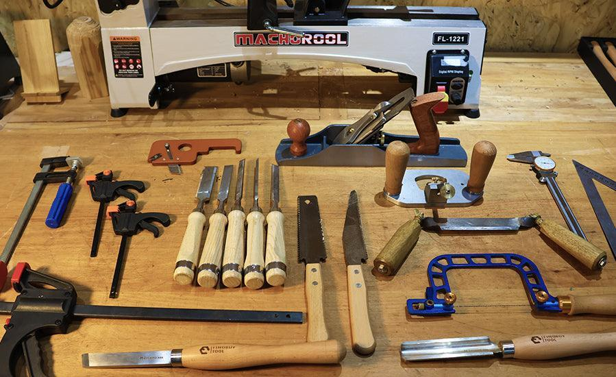
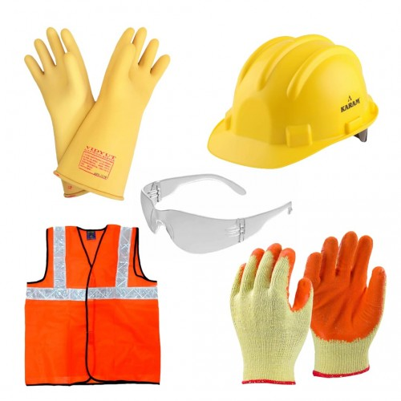
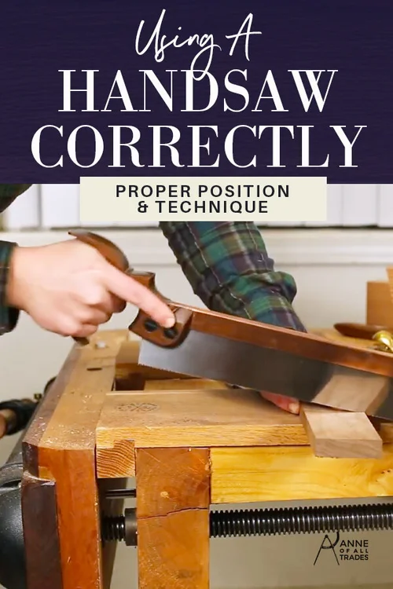
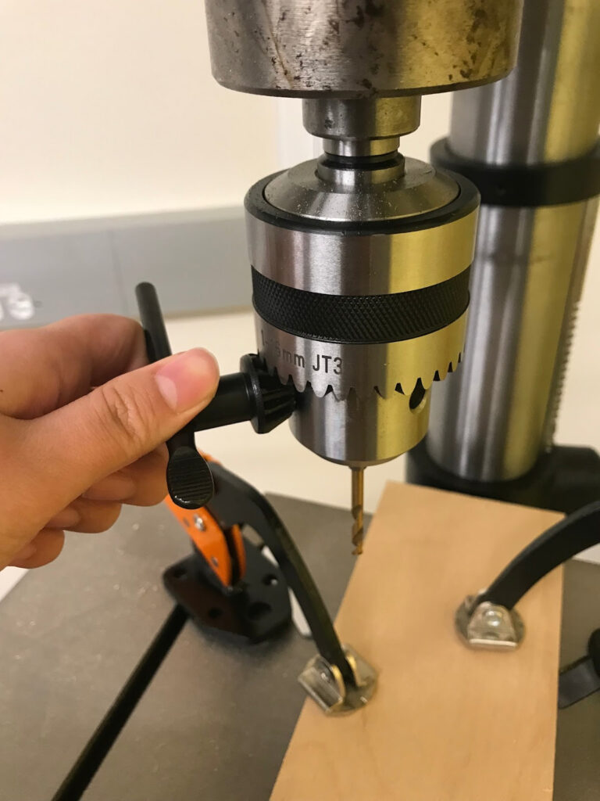
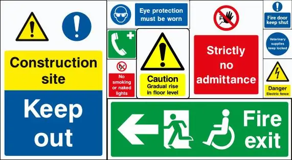

Complete OnGuard training: Successfully finish safety training for hand tools and power tools/machinery, then apply this knowledge confidently in class. This certification is your ticket to using tools safely.
Set up work safely: Use the correct PPE (Personal Protective Equipment), proper clamping techniques, and maintain line of fire awareness for all tower and beam work. Safety starts before you pick up a tool.
Understand safety signs: Recognise and obey workshop safety signs instantly. These visual cues protect you and your classmates - learn to read them like a professional.
Operate core tools: Safely operate a corded drill and hot glue gun - two essential tools you'll use throughout the course. Master these, and you'll be ready for more advanced projects.
Apply risk management: Use the hierarchy of control and DRABC (Danger, Response, Airway, Breathing, Circulation) as part of a simple first response. These frameworks help you think like a safety-conscious engineer.
Why This Matters
Workplace Health and Safety (WHS) is not just "rules to remember" - it's a mindset that protects you, your classmates, and your work. Think of WHS as your engineering superpower: it helps you:
Protect yourself and others while working with tools and machines
Look after equipment and the workshop so it stays safe for everyone
Build and test your tower, beam, and other projects without avoidable risk
Develop professional habits that will serve you throughout your engineering career
How to use this module: Apply these ideas when you complete OnGuard tests, plan and write your SWMS (Safe Work Method Statements) for tower/beam construction and testing, and choose appropriate PPE and safe methods for drilling, gluing, and cutting in later modules. This knowledge becomes second nature with practice.
Hand Tools - Safe Use

General Rules
Only use tools you have been trained and approved to use.
Wear required PPE: safety glasses at all times in the workshop; apron/overalls; hearing protection if the area is noisy.

Inspect before use: no cracks in handles or bodies; no loose heads, bent blades or missing parts; cutting edges sharp and not chipped.
Keep your non-working hand out of the line of fire: cut, chisel and plane away from your body; always clamp the work.
Carry sharp tools with the edge down or covered; return tools to the correct rack or drawer; no tools hanging off bench edges.

By Tool Type
Measuring / Marking: do not let tape blades snap back uncontrolled; keep compass/divider points closed or covered.
Cutting (saws, knives): clamp or support work; never cut toward your hand or body; keep fingers a hand's width from saw blades; use a cutting mat or scrap under knife cuts; retract or sheath blades when not in use.
Chisels / Planes: use a bench hook or vice; use a mallet on wooden handles; never push toward hand or body; fit caps or guards on sharp edges when storing.
Striking (hammers, mallets): check heads and handles for cracks or looseness; grip near the end for control; keep fingers away from nail heads when starting nails.
Clamping / Holding: adjust clamps to grip firmly without crushing material; keep jaws clean and screws smooth so they do not slip.
Boring / Driving (hand drills, screwdrivers): use the correct size/type of screwdriver or bit; apply firm, controlled pressure; support and clamp work so it does not spin.
Power Tools - Core Rules
Before You Start
Only use power tools after teacher demonstration, any required theory/OnGuard test, and permission from your teacher that lesson.
PPE (minimum)
Safety glasses.
Hearing protection for noisy tools or long sessions.
Tie long hair back; remove jewellery/cords; no loose clothing.
Inspect the tool
Cord and plug intact; no cuts or exposed wires.
Body not cracked; vents clear; guards or covers in place.
Switch and trigger operate smoothly.
Setting Up
Clamp or support work securely—never hold small pieces by hand when drilling or cutting.
One operator per power tool unless specifically supervised as a two-person task.
Plan your stance and cord path so you are balanced and will not trip or bump other students.

During Use
Keep hands out of the danger zone around bit, blade or hot surfaces.
Use the correct bit, speed and mode for the material (low speed for metal; impact mode only for masonry).
Do not force the tool; let it cut or drill at its own rate.
If vibration, burning smell, smoke or unusual noise: stop, switch off/unplug if safe, and inform the teacher. Do not try to fix it yourself.
After Use
Release the trigger and wait for a complete stop before setting the tool down.
Switch off and unplug before changing bits or cleaning.
Wipe off dust when cool; store with the cord loosely coiled, not tightly wrapped.
Safety Signs - Know the Categories

Mandatory (Blue circle) - things you must do: eye protection, hearing protection, safety footwear.
Prohibition (Red circle with slash) - things you must not do: no running, no unauthorised entry, no food or drink.
Warning (Yellow triangle) - hazards present: high noise level, flammable liquids, hot surfaces.
Emergency Information (Green rectangle) - help and escape: first aid station, emergency exit, eye wash or safety shower.
Fire (Red rectangle or square) - fire-fighting equipment: fire extinguishers, hose reels. Use only if trained or instructed.
Application: obey every sign, every time. Report any missing, damaged or unclear signs to your teacher.
Risk Management & Hierarchy of Control
You will use the hierarchy of control when writing your SWMS and risk activities. From most effective to least effective:
Elimination - remove the hazard completely (e.g. pre-cut materials off-site so students do not use a particular machine).
Substitution - replace with something safer (e.g. use a smaller drill bit or lower-voltage tool where possible).
Engineering controls - isolate people from the hazard (e.g. machine guards, clamps, jigs, barriers).
Administrative controls - change the way people work (e.g. training, clear procedures, signage, restricted access).
PPE - protect the person (e.g. glasses, hearing protection, gloves).
When you plan tower and beam tasks, aim to use higher-level controls first, then support them with admin and PPE rather than relying on PPE alone. See the Hierarchy of Controls diagram and Risk Management Plan template (PDF) before completing your SWMS.
D - Danger: check for danger to you, the casualty and others. Make the area safe before approaching.
R - Response: check if the person is conscious and responsive. Call for help.
A - Airway: gently open the airway (if trained) and check it is clear.
B - Breathing: look, listen and feel for normal breathing.
C - CPR / Circulation: if not breathing normally and you are trained, begin CPR. If not trained, immediately get the teacher or first aider and call emergency services.
For minor injuries: report all cuts, burns and eye injuries to your teacher immediately; follow teacher instructions for first aid, bandaging and reporting.
Corded Drill (Variable Speed / Impact)
Hazards & PPE
Hazards: flying chips, entanglement in rotating parts, spinning work, kickback, electric shock, noise and vibration.
PPE: safety glasses; hearing protection for long or heavy drilling; dust mask for fine dust; enclosed leather footwear.
Pre-Operation Checks
Cord and plug intact; casing not cracked; vents clear.
Correct drill bit for material; bit straight, sharp and firmly tightened in chuck.
Chuck key removed before starting.
Workpiece clamped; no hands behind or under the drilling area; cord routed so no one can trip.
Safe Use
Choose speed: low speed for metal/large bits; higher speed for timber/small bits. Use impact mode only for masonry.
Use two hands on the drill (side handle if fitted). Start slowly to position the bit, then increase speed; do not force the drill.
Lift slightly in deep holes to clear swarf; keep fingers clear of rotating parts; do not touch hot bits after use.
Post-Operation
Release trigger and wait for full stop before setting the drill down.
Switch off and unplug to change bits or when finished.
Wipe off dust; store with cord loosely coiled and off the floor.
Hot Melt Glue Gun (Corded)
Hazards & PPE
Hazards: burns from nozzle and glue (approx. 150-200 C), dripping glue, fire risk, electric shock from damaged cords.
PPE: safety glasses; clear, uncluttered bench; drip tray or scrap under nozzle; use the stand at all times.
Pre-Operation & Setup
Cord and plug intact; stand stable; correct glue sticks available and dry.
Insert glue stick before power-on if required by the model.
Heat the gun on its stand; do not test by touching the nozzle.
Safe Use
Hold by the insulated handle only.
Use gentle trigger pressure; do not over-apply glue; keep your other hand clear of the glue path.
Press parts together lightly and adjust quickly before the glue sets.
If hot glue contacts skin: do not wipe. Cool under running water and inform the teacher immediately.
Always return the gun to its stand when not in use; keep cords out of walkways; do not pull partially melted sticks out of the back.
Post-Operation
Switch off/unplug if the gun will not be used for a while.
Leave it on its stand to cool; do not lay it on its side.
Remove glue strings only when cool; store upright.
Activities & Evidence
OnGuard Completion
Complete the required OnGuard modules (hand tools, power tools/machinery).
Capture proof of completion (certificate, screenshot or teacher record).
Design a safety sign for a real workshop hazard (e.g. eye protection, hot surfaces, no running).
Use the correct category (mandatory, prohibition, warning) and include text and symbol.
Photo Evidence
Take or use photos (teacher-approved) showing: correct PPE in use; work clamped for drilling; glue gun on its stand with drip tray.
Use these as part of your folio or reflection.
Student Responsibilities
Follow all teacher instructions and workshop rules. No shortcuts.
Only one operator per power tool unless your teacher sets up a supervised two-person task.
Report any damaged tools, faulty cords, missing guards or unsafe behaviour immediately.
Never attempt repairs yourself; stop, isolate, report.
Respect shared equipment: return tools clean, sharp and stored correctly; leave benches and machines clean for the next class.
WHS Q&A
Why do you need teacher permission and OnGuard completion before using power tools?
They confirm you have the knowledge, training and supervision required. Without them, you may not recognise hazards, use the wrong setup, or bypass controls, increasing risk of injury.
What is the minimum PPE expected in the workshop?
Safety glasses at all times. Add hearing protection for noisy work, enclosed footwear, and tie back hair/remove jewellery or cords to avoid entanglement.
What does “line of fire” mean when using hand tools?
It is the path a tool or workpiece will travel if it slips or breaks. Keep hands and body out of that path, and clamp work so you are not holding material where the tool is moving.
What is the first control to consider in the hierarchy of control?
Elimination—remove the hazard entirely. If that is not possible, work down through substitution, engineering, administrative controls, then PPE.
What should you do if a tool vibrates, smells burnt or sounds wrong?
Stop immediately, switch off and unplug if safe, and inform the teacher. Do not attempt repairs yourself.
Why must small work be clamped instead of held by hand when drilling or cutting?
Clamping prevents the piece from spinning, kicking back or moving into the line of fire, protecting your hands and improving accuracy.
What is the correct response if hot glue contacts skin?
Do not wipe. Cool the burn under running water immediately and inform the teacher so first aid can be given.
In DRABC, what is the first step and why?
Danger. You must ensure the area is safe for you, the casualty and others before approaching; otherwise you could become a second casualty.